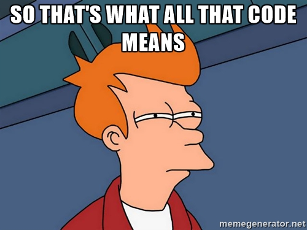
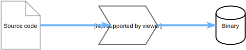

The unseen hero of modern compilers
Created by Olivier Cano / @kindermoumoute
August 15, 2016
Keyboard Shortcuts
| Full Screen | F |
| Next Slide | Space bar |
| Slide Notes | S |
| Thumbnail View | Esc |
View online at https://github.com/kindermoumoute/ssaform
Note: Some slides move down instead of to the side, so use the space bar to advance slides.
About Me
- Working on Snap in the SDI Team
- Student at Centrale Lille IG2I, northern France
- Advocate for sustainability
- Passionate about programming

Started programming on calculators
Today is about SSA Form
Definition
SSA FORM
In compiler design, static single assignment form is a property of an intermediate representation (IR), which requires that each variable is assigned exactly once, and every variable is defined before it is used.
Intermediate reprensentation

Compiler optimizations
- Remove unecessary variables
- Optimize basic mathematic expressions
Low-level meaning
- Limit abusive use of registers
- Use the most efficient instruction sets
SSA by example
Human point of view
z = i + x
x = 2 * z
-
i, x and z are integer
- 1 addition
- 1 multiplication
- 2 assignments
Dumb compiler
z = i + x
x = 2 * z
- Load 2 variables
- Add x to i
- Storing the result
- Load a constant and a variable
- Multiply 2 by a variable
- Storing the result
Compiler using SSA
x = (i + x) << 1
- Load 2 variables
- Adding a variable
- Optimized multiplication by 2
- Storing the result
z = i + x
x = 2 * z
Clarity and quality
premature optimization is the root of all evil
SSA today
- register allocation
- dead code elimination
- strength reduction
- constant propagation
- sparse conditional constant propagation
- global value numbering
- partial redundancy elimination
- value range propagation
Example of Go 1.7
- New backend for x86-64 architectures
- 24% binary size decrease
- 5-35% speed improvement
Thank you!
Questions?
- Twitter: @kindermoumoute
- Slides: kindermoumoute.github.io/ssaform
- Github: github.com/kindermoumoute